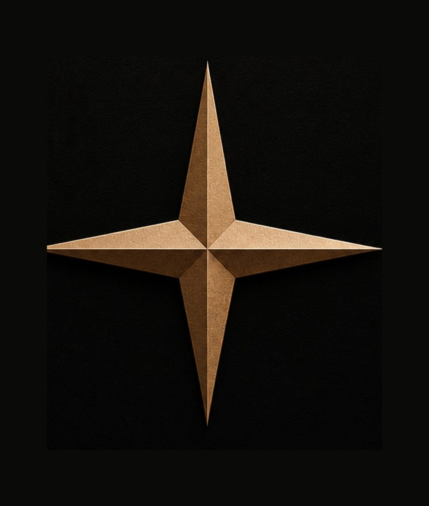
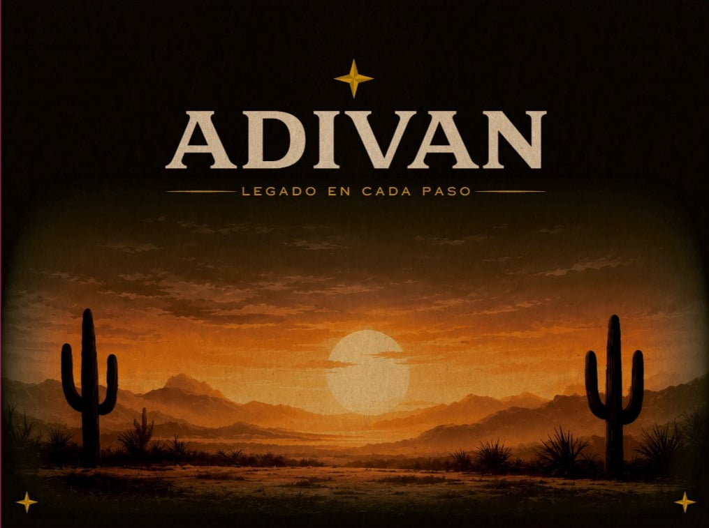

Nosotros
Nuestra historia
ADIVAN: donde la tradición se encuentra con lo moderno

ADIVAN nace de la pasión por la piel y la fuerza del estilo Western. Somos una marca mexicana dedicada a transformar piel genuina en botas que acompañan tu día a día, desde la ciudad hasta el rodeo.
Cada par es trabajado con detalle, respetando los procesos artesanales y combinándolos con un diseño contemporáneo. No creemos en productos desechables: creemos en piezas que se vuelven parte de tu historia.
- Piel seleccionada de alta calidad
- Hecho a mano en talleres especializados
- Diseño Western con sensibilidad moderna
Valores
Lo que nos define
Hecho a mano
Cada par pasa por manos artesanas, sin líneas de producción en masa.
Piel genuina
Trabajamos piel de res genuina con grabados tipo exótico (cocodrilo, avestruz, pescado y más).
Hecho para durar
Suela de doble vida y costura reforzada, pensadas para años de uso real.
Detrás de cada puntada
Nuestros talleres cortan, cosen y terminan cada bota a mano. El resultado no es perfecto en el sentido industrial, es mejor: auténtico, con carácter, y hecho para envejecer bien contigo.
